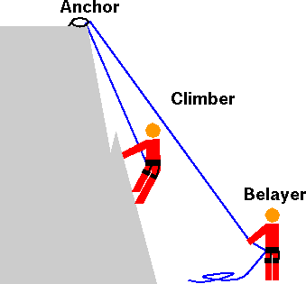
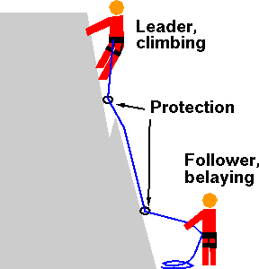

Top rope climbing is a type of rock climbing where the climber is attached to a rope that goes through a fixed anchor at the top of the climb and
back down to the belayer at the base. A belayer controls the safety rope for a climber, a belayer is typically a person, but can also be an auto-belay machine.
Top Roping can be done indoors or outdoors and the equipment needed varies slightly between versions
For indoor climbing the equipment required for this type of climb is proper clothing, shoes, a locking carabiner, a harness, rope, and a belay device or person.
Outdoor climbing requires the same equipment with the addition of a helmet for safety and the creation of an anchor prior to beginning.
The anchor in top rope is essentially what makes it a different style of climbing than lead climbing.

Bouldering
Bouldering is a type of climbing that can be done both indoors and outdoors.
It is a form of free climbing that is performed on small rock formations or artificial walls.
These routes are typically a shorter height than other types of climbs, but they still
have many challenging routes. The height of the routes makes bouldering relatively
safe with routes only around 15 ft high.
This type of climbing uses much less equipment than other variations.
All that is needed is proper clothing, shoes, and possibly chalk. Bouldering outdoors will also require a crash pad
to minimize injury when falling.
Similar to other climbs, in bouldering there is a large variation in the difficulty of different routes.
Lead Climbing
Lead climbing refers to a type of rock climbing where the climber is attached to a rope that they have to attach to fixed bolts as they climb.
This rope runs directly from the climber to the belayer. The lead climb belayer manages the rope and produces slack as the climber travels up the route.
The equipment needed for lead climbing is proper clothing, shoes, a locking carabiner, a harness, rope, a belayer person, and potentially a quickdraw, a device used to more efficiently attach the rope to the fixed bolts of the wall.
Lead climbing requires much more endurance than top rope climbing or bouldering as the climber is in charge of attaching the rope to the climbing protection on the wall.

 Climb Central
Climb Central